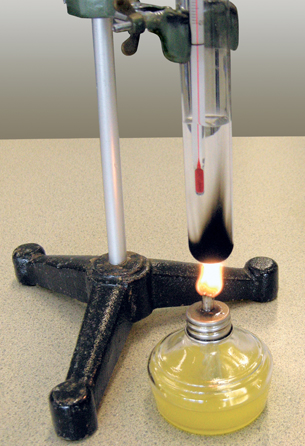

Module 6—Petrochemicals
Lesson 4—Carboxylic Acids and Esters
 Get Focused
Get Focused

In Unit A you learned about biodiesel, an alternative automobile fuel made from waste cooking oil. Finding a use for waste oils and other compounds that are waste products of other processes makes good sense. It is not surprising that finding a use for “waste” materials is consistent with the principles of green chemistry, since this practice does not allow for substances to accumulate without a purpose.
Examine the biodiesel reaction shown below. Do you recognize a familiar chemical structure, one that would belong to a group of molecules introduced in a previous lesson in this module?
Biodiesel Reaction
![A diagram shows the chemical reaction for making biodiesel. The first reactant is labeled “a typical fat or oil.” The corresponding molecule is shown as three parallel hydrocarbon chains of CH3(CH2)16COOCH. The three parallel chains are joined by a vertical line between the last carbon of each chain. On the upper and lower chains, the final carbon has two hydrogen atoms. The second reactant is 3 moles of NaOH. The first product is 3 moles of CH3(CH2)16COONa and is labeled “a typical sodium salt found in soap.” The second product is labeled “glycerol” and is shown as three carbon atoms aligned vertically.” The upper and lower carbon atoms have the chemical formula CH2OH.The middle carbon atom has the chemical formula CHOH.](../../images/m6/c30_m6_057_l.jpg)
You may have noticed that an alcohol is a product of the reaction. In Lesson 3 you learned about alcohols—a type of organic compound that contains an oxygen atom in its functional group. If you look closely at the reactant and other products of the reaction, you will notice that there are two other types of organic compounds containing oxygen. These two classes of molecules will be the focus of this lesson. In Lesson 4 you will learn about carboxylic acids and esters.
Consider the following questions as you complete Lesson 4:
-
What are carboxylic acids and esters?
-
How are carboxylic acids and esters involved in the petrochemical industry?
 Module 6: Lesson 4 Assignment
Module 6: Lesson 4 Assignment
Download a copy of the Module 6: Lesson 4 Assignment to your computer now. You will receive further instructions on how to complete this assignment later in the lesson.
You must decide what to do with the questions that are not marked by the teacher.
Remember that these questions provide you with the practice and feedback that you need to successfully complete this course. You should respond to all the questions and place those answers in your course folder.